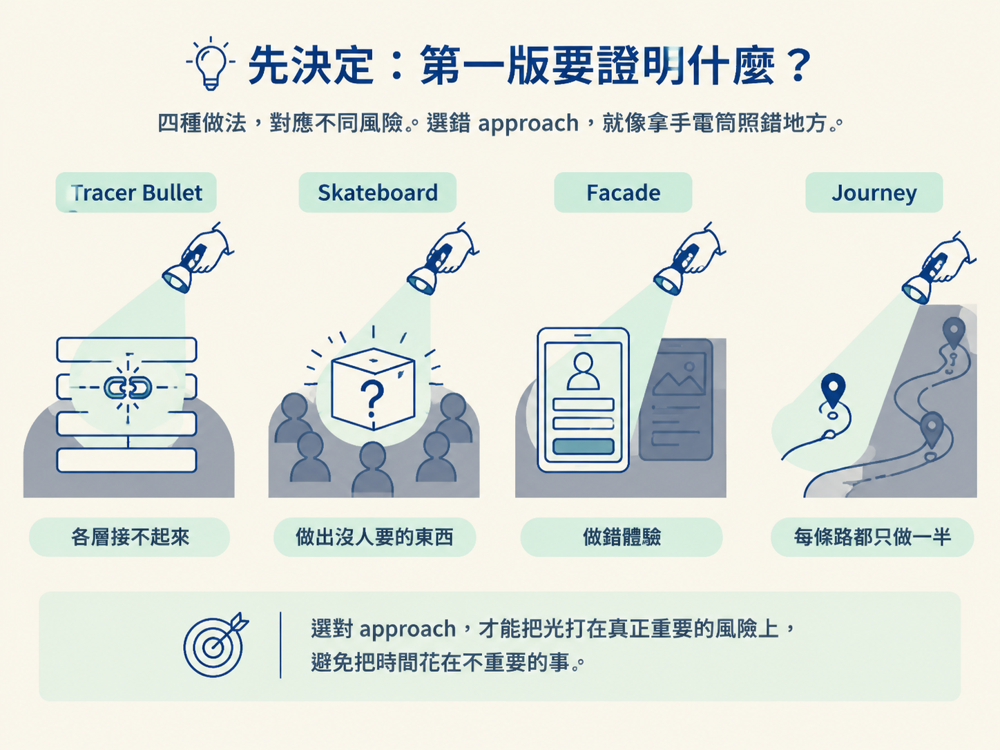
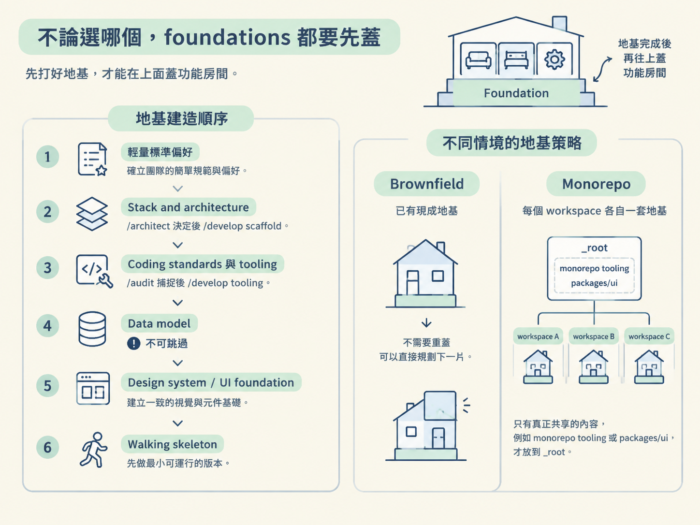

假設你的 standup app 已經列好功能：登入、建立 team、邀請成員、提交今天的 standup、查看 team feed、提醒，以及歷史紀錄。現在真正難的地方，是決定第一版要做到哪裡，而不是再多加一項功能。
你可以先串一條每層都真的會跑的細線，也可以先做出一個功能很少、但真人能使用的產品；你可以用假資料把所有畫面做出來，也可以把「提交 standup」這條路徑連同各種狀態完整打磨。
這四種做法不是單純的開發風格。它們是在處理不同風險。選錯了，就像拿手電筒照錯地方：你花很多時間證明不重要的事，真正可能讓專案失敗的問題卻還躲在黑暗裡。

| Approach | 核心直覺 | 第一片是什麼 | 什麼是真的、什麼延後 |
|---|---|---|---|
| Tracer Bullet | 先證明整條管線接得起來 | 穿過每一層的最細真實線，也就是 walking skeleton | 真實結構全部保留：真 auth、真 schema、真 UI；只先砍掉廣度，之後再逐段加厚 |
| Skateboard | 先出一個真的能用的最小完整產品 | 最薄的可使用整體，小到能出貨 | 可以先砍掉結構本身；例如 teams、roles 若非必要就延後，只留下使用者真正需要的部分 |
| Facade | 先用假資料把體驗做得像真的 | 所有關鍵畫面都能點、能導覽，跑在 mock 資料上 | 畫面、導覽、狀態是真的；認證、資料庫與持久化先用 stub，之後再逐個畫面接回 |
| Journey | 一次把一條完整使用者旅程做到位 | 一條 primary journey 的每個步驟、所有狀態與打磨 | 這條路徑完整，包含邊界狀態；其他旅程整條延後，不做半成品 |
「第一版完成」在四種 approach 裡，代表的意思各不相同：
不要背名稱，先問自己以下三題。每一題都應該能把你的選擇推向一個具體答案。
正式建置的預設是 Tracer Bullet。只有在目標明確需要其他 approach 時才換，而且要用這個產品的語言說明理由，不要只說「這是比較快」或「這是比較完整」。
Facade 是最容易被誤解的例外。它的第一階段是 prototype grade，會刻意把後端造假，換取速度與回饋。這不是偷懶，是它本來就採用的策略。
問題在於，如果沒有明講「這還不是 production complete」，團隊很容易把「畫面能動」誤認成「功能完成」。選擇 Facade 時，要把它明確標成原型，並把「接上真後端」列為後續獨立工作。
Tracer Bullet 也有一個常見誤區：它不等於一次把整個技術棧裝滿。你要做的是一條穿過每一層的細線，只安裝這條線需要的東西。等某個 feature 真正開始建置時，再安裝它自己的依賴。
決定完整 stack 是 /architect 的責任；把所有可能用到的東西一次安裝完，則不是。
四種 approach 都遵守同一個前提：功能切片之前，先把它站得住的地基蓋好。否則就像在沙地上切房間，房間切得再漂亮，也沒有可靠的骨架支撐。
Greenfield 的 foundation 大致依照以下順序建立：
/architect 決定 stack，再由 /develop 依照決定 scaffold 出可執行的骨架。/audit 從真實專案捕捉慣例與工具選擇，再用 /develop tooling 安裝。這一步緊接在 stack 與 scaffold 之後，不能提前。Brownfield 已經有地基，不需要重蓋，可以直接規劃下一片。Monorepo 則是每個 workspace 各自建立一套 foundation；只有真正共享的內容，例如 monorepo tooling 或 packages/ui，才放到 _root。

把你的選擇寫成兩句話：
- 我要先對付的主要風險是＿＿＿＿，所以選＿＿＿＿。
- 這個選擇的例外或後續補回項目是＿＿＿＿。
如果沒有特別理由，正式產品就選 Tracer Bullet。如果選 Facade，一定要標明它是 prototype grade；不論選哪個 approach，foundations 都排在功能切片之前，而且 Data model 絕不跳過。